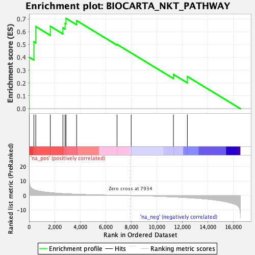
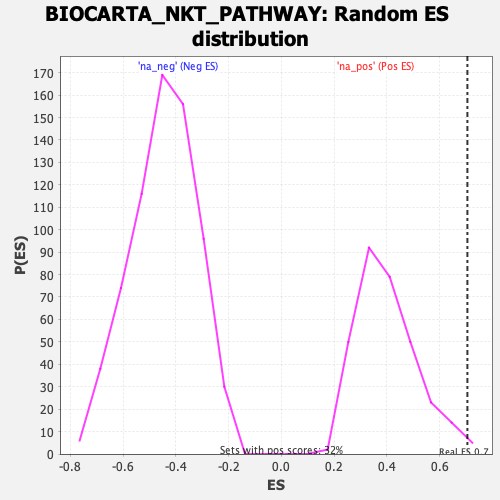

| | | Dataset | DE_genes2 |
| Phenotype | NoPhenotypeAvailable |
| Upregulated in class | na_pos |
| GeneSet | BIOCARTA_NKT_PATHWAY |
| Enrichment Score (ES) | 0.70474064 |
| Normalized Enrichment Score (NES) | 1.7657636 |
| Nominal p-value | 0.00952381 |
| FDR q-value | 0.12984647 |
| FWER p-Value | 0.478 |
Table: GSEA Results Summary

Fig 1: Enrichment plot: BIOCARTA_NKT_PATHWAY
Profile of the Running ES Score & Positions of GeneSet Members on the Rank Ordered List
| PROBE | GENE SYMBOL | GENE_TITLE | RANK IN GENE LIST | RANK METRIC SCORE | RUNNING ES | CORE ENRICHMENT | | 1 | CSF2 | | | 8 | 11.489 | 0.4014 | Yes |
| 2 | IFNGR2 | | | 375 | 4.092 | 0.5224 | Yes |
| 3 | IL12RB1 | | | 526 | 3.641 | 0.6407 | Yes |
| 4 | IL4R | | | 1663 | 2.026 | 0.6428 | Yes |
| 5 | TGFB2 | | | 2647 | 1.364 | 0.6310 | Yes |
| 6 | IFNGR1 | | | 2819 | 1.277 | 0.6653 | Yes |
| 7 | CD4 | | | 2889 | 1.247 | 0.7047 | Yes |
| 8 | TGFB3 | | | 3721 | 0.923 | 0.6867 | No |
| 9 | TGFB1 | | | 6882 | 0.174 | 0.5015 | No |
| 10 | IL12RB2 | | | 7989 | -0.010 | 0.4349 | No |
| 11 | IL18R1 | | | 11296 | -0.925 | 0.2672 | No |
| 12 | CCR7 | | | 12384 | -1.420 | 0.2510 | No |
Table: GSEA details [plain text format]

Fig 2: BIOCARTA_NKT_PATHWAY: Random ES distribution
Gene set null distribution of ES for BIOCARTA_NKT_PATHWAY